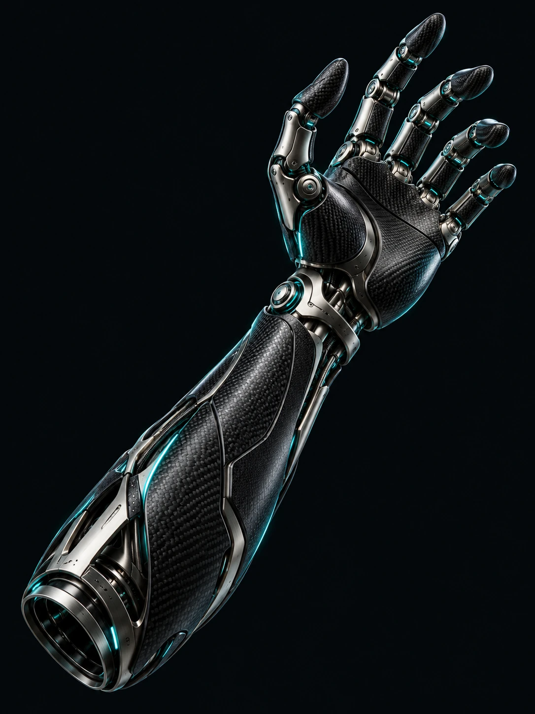

Understand the person
Understand needs, movement patterns and everyday experiences before drawing the first line.
EMPATHIZEDESIGN IN SERVICE OF LIFE
I’m Erfan Mohiti, a medical prosthesis designer.
Where engineering meets emotion, I design for
movement, independence and human connection.

01 / SELECTED CONCEPTS
From the first silhouette to the smallest joint.
Exploring design for the body and everyday life.
The best design
lets people
be themselves.
02 / TAKE A CLOSER LOOK
Explore a concept prosthetic hand mechanism.
Rotate the model and discover its structure.
The model loads as you approach this section
03 / MY APPROACH
Every body has its own story.
Design begins by understanding it.
Understand needs, movement patterns and everyday experiences before drawing the first line.
EMPATHIZETurn needs into geometry, balancing ergonomics, weight and a clear visual language.
DESIGNModel, prototype and revisit the details to bring the design closer to the intended experience.
ITERATE04 / BEHIND THE DESIGN
Erfan Mohiti / Medical prosthesis designer
To me, a prosthesis is part of a person’s lived experience. My interest lies in balancing function, comfort and a form the wearer can connect with.
I bring an engineering perspective and a human outlook to the design process, from the smallest connection to the way a product feels in everyday use.
ONE IDEA CAN START A CHANGE.
Collaborate on design, develop ideas and create more human experiences.